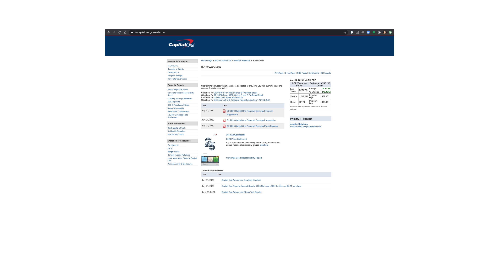
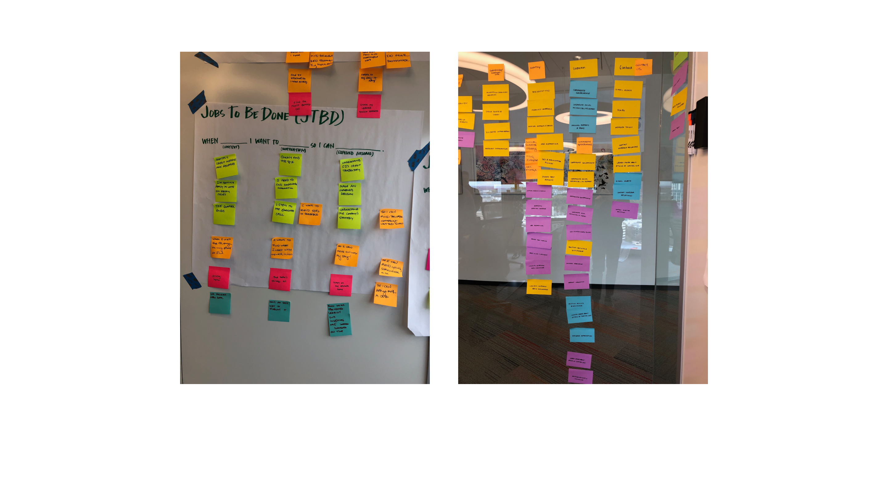
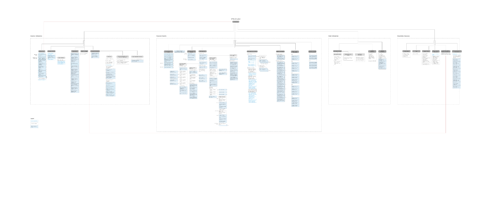
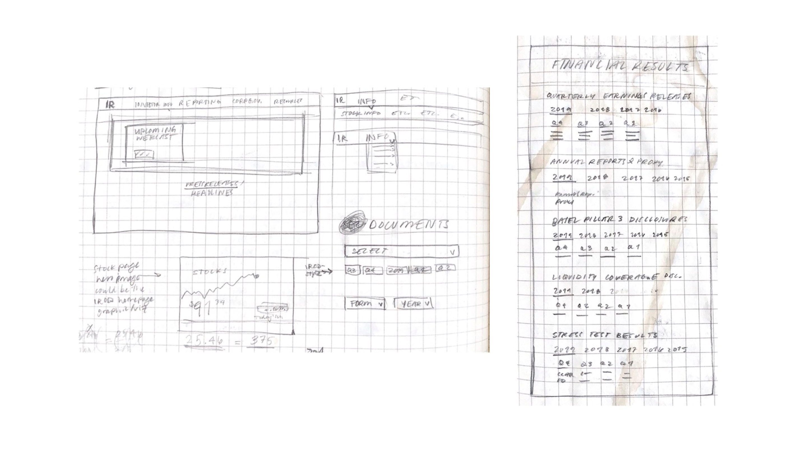
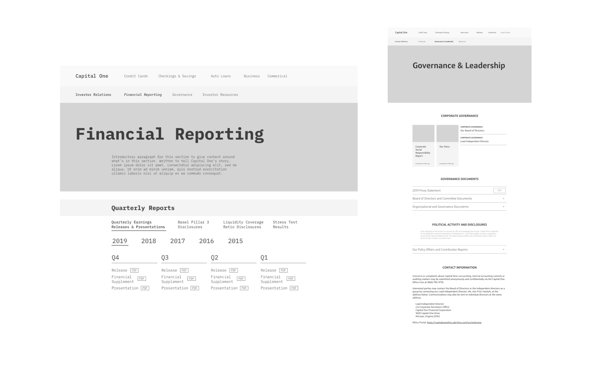
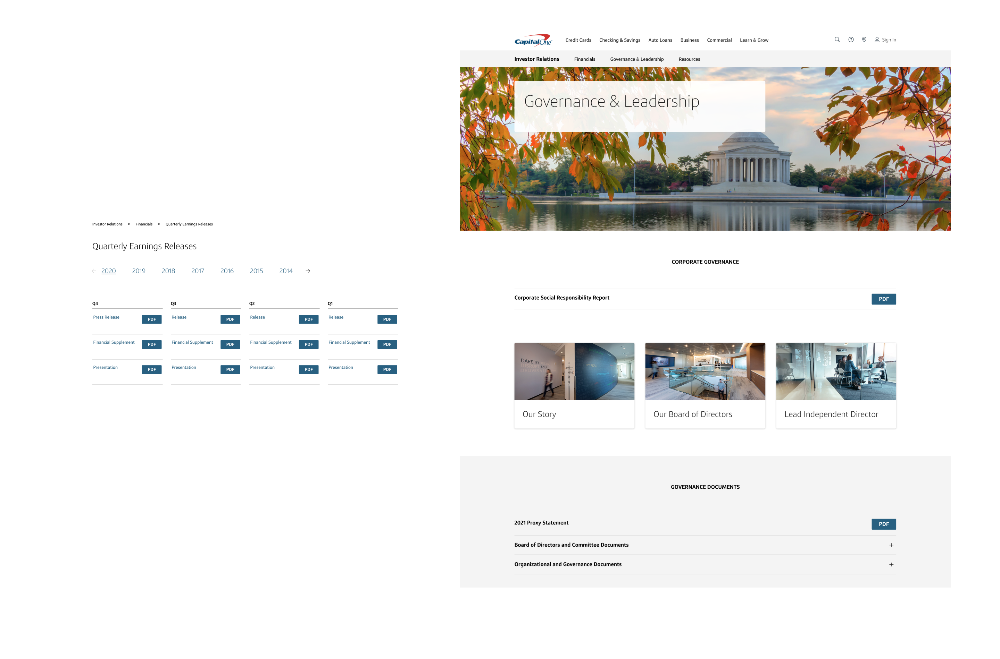

Capital One Investor Relations Page: A Case Study
The Problem
Our existing investor relations page was outdated and extremely difficult to use, with conflicting layers of navigation. I was tasked with bringing it up to parity with Capital One’s other pages and with improving its usability. My responsibilities in this project included strategy, information architecture, and wireframing. I handed off mid fidelity wireframes to a teammate who handled the visual design and another who was responsible for developing the site.

Design Jam
My first step in this project was to talk to our users. Because of the limited time scope, I wasn’t able to contact actual investors, but spoke with Product Owners in the company as proxies. Together with them, we mapped out the “jobs to be done” of our users so that we could build a site that fulfilled their needs. We also used this time to take a full inventory of all the content on the site and have our user proxies help us categorize them. This helped us immensely in the IA stage of the project. It also helped to convince our partners that a reassessment of the IA was necessary, instead of just the visual facelift they had originally proposed.

Information Architecture
Stickies in hand, I made my way to Sketch to build out an information architecture diagram for the site, keeping in mind the categorizations we had developed in our design jam. This was a lot of heavy, heads-down work with frequent validation from our IR and legal teams to make sure everything was in its right place.

Sketching
After settling on and validating my IA diagram, I started sketching. Like my other projects, this was the stage at which I went for quantity over quality. I knew roughly the shape the pages would take because I had to hew to Capital One’s existing website style, but beyond that I was free to imagine new ways of presenting the information on the pages.

Wireframing
After validating one of the directions I’d chosen to go in during my sketching, I began to create wireframes. I worked within Capital One’s existing design system, but also created some components that I thought benefitted this particular use case if none like them existed in the system.

The Outcome: The Final Site
The current site now has an updated information structure with navigation that aligns with our users’ goals, as well as a new (and hopefully improved) look that adheres to Capital One’s design system.
